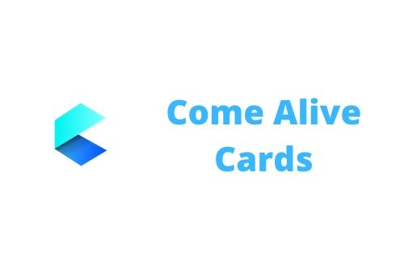

Come Alive Cards began as a birthday present for a friend. I wanted the card to be special, so I made it come alive in augmented reality. A video of it shared on social media drew attention, and people started asking for custom cards for their own family and friends.
I went on to make about thirty cards for clients beyond friends and family, in cities across India and abroad in the UK, the USA and Singapore, and set up a page for customer reviews and later a website.
Because people wanted to see what a card could do before ordering one, I published a demonstration app on Google Play. I also presented the app and its project structure to students at St. Francis Institute of Technology.
How it is built
- Image recognition with the Vuforia SDK for Unity.
- 3D characters and animations made in Adobe Fuse and rigged with Mixamo.
- Logic that plays a different soundtrack for each picture.
- Card designs made in Inkscape, used as the AR targets.
For a custom card, the client's own photographs become the AR targets, and the 3D characters are modelled to resemble the people in them. This led to my 2019 paper on generating 3D characters from images using convolutional neural networks.
Details
- Role
- Producer, card design, Unity and Android development
- Started
- 2017
- Links
- comealivecards.com · Google Play